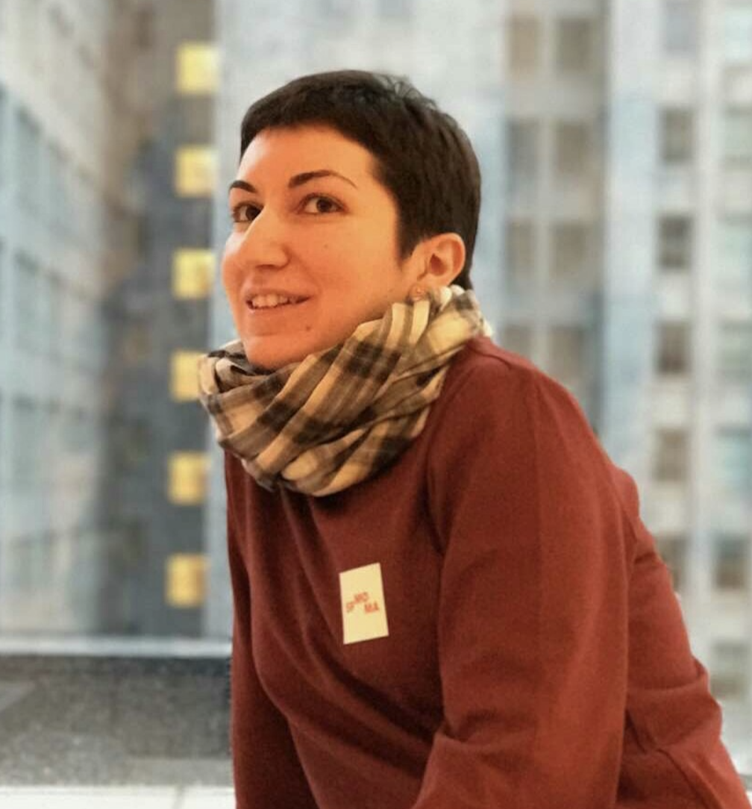

ELINA K. KAGRAMANOVA

Summary
Excellent social, interpersonal and communication skills to interact with patients and hospital staff. Strong ability to work under extreme pressure of childbirth and delivery procedures.
Education
2016 USMLE Step 2 CK, score 224, first attempt.
2014 USMLE Step 1, score 230, first attempt.
The First Moscow Medical State University I.M. Sechenov
The City Clinical Hospital No7
Obstetrics and Gynecology Resident, 2007 - 2009
2007 – 2008, Maternity Unit at the City Clinical Hospital No7
- Providing medical care for women with different types of pregnancy failure.
- Providing medical care for women during uncomplicated or complicated postnatal period including women after vaginal birth and women after cesarean section.
- Assisting during cesarean sections and independently executing different stages of cesarean section.
2008 – 2009, Gynecological Unit at the City Clinical Hospital No7
- Providing medical attention for women with different types of gynecological disorders such as dysfunctional uterine bleedings, inflammatory diseases of uterus and adnexas; uterine myomas; hyperplastic processes of endometrium.
- Familiarizing myself with innovative diagnostic methods in gynecology.
- Performed various gynecological surgeries.
The Russian National Research Medical University named after N.I. Pirogov
Formerly Russian State Medical University
MD, June 2007
- Diploma with excellence
- Member of the Student Scientific Circle on Obstetrics and Gynecology
- Member of the Student Scientific Circle on Operational Surgery, Topographical Anatomy
- Member of the Student Scientific Circle on Biochemistry
Work Experience
The Maternity Hospital No15, Moscow, Russia.
Obstetrician and Gynecologist, July 2010 – September 2012
- Providing medical care and treatment for women during pregnancy, childbirth and postnatal stages.
- Discussing reproductive health, childbirth procedures, and other maternal concerns with expectant mothers.
- Monitoring reproductive health conditions and treatment progress and documenting findings and observations.
- Re-evaluating treatment programs as necessary.
- Assisting women in labor to increase tolerance in labor pains.
- Determining if normal or cesarean childbirth is in order.
- Performing cesarean sections as may be needed to preserve both mother's and baby's health.
- Managing vaginal birth after cesarean section.
- Managing pregnancy with chronic hypertension, gestational hypertension, pre-eclampsia.
- Providing ultrasound investigation.
- Referring patients to a specialist when suspecting ailments beyond capacity to treat.
- Keeping abreast with developments in the discipline.
- Particular expertise in preterm birth, recurrent miscarriage.
Skills
- Self-motivation ✋
- Flexibility and adaptability ✌️
- Time management ☝️
- Problem-solving ✊
Certificates
2010 Medical ultrasonography, Russia, Moscow.
2010 KIWI Complete Vacuum Delivery System with Palm Pump, Russia, Moscow.
Publication
Published: ‘Cleanse your body to be healthy’
Moscow State University of the Service Journal, 2005.
Other